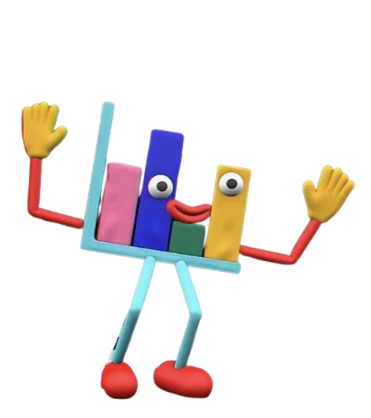
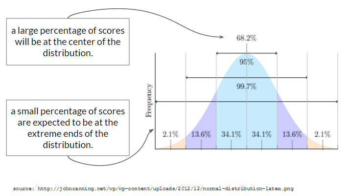
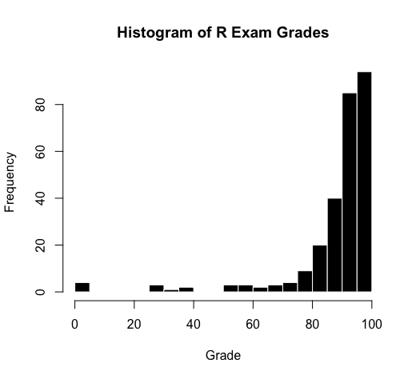

hist(d$SELFES, col = 'black', bor = 'white',
main = "Histogram of Self-Esteem",
xlab = "Self-Esteem Score", breaks = 15)
Hello! This week, you’ll learn how to use statistics to describe data in terms of centrality and complexity (and review how the mean and standard deviation can be thought of as prediction and error).

Centrality refers to ways that statistics try to reduce the complexity of individual scores in a distribution to some more simple shared feature. Statistics like the mean, median, and mode try to focus on what is most common, or core, to a set of diverse data. You can think of centrality like a summary - while a lot of information is lost in summary (e.g., Lord of the Rings is much more about some Hobbits trying to destroy an evil ring), a summary often gets the point across in few words (e.g., Lord of the Rings does spend a lot of time describing Hobbits trying to destroy an evil ring.)
The mean (also known as the average) is one of the most important statistics, and the foundation for much of what we will do in this class.
You probably learned this equation as something like, “add up all the numbers and divide by the total number of numbers”. This is technically correct, but scientists like to be more specific and formal, and so statistics uses a more specific language.
The statistical equation for the mean is below; it may look confusing, but it is really just a fancy version of the same definition of the mean you know and love. Specifically, the formula defines the mean as “equal to the sum of all individual x-values (starting with the first individual and ending with the last individual in the dataset), and divided by the sample size.”
| The Equation | Breakdown of Terminology |
|---|---|
| \[ \Large \bar{y} = \frac{\sum_{i=1}^n y_i}{n} \] |
|
So, when reading this formula, you would “say” : “y bar (the mean) is equal to the sum of all individuals of y (\(y_i\)) starting with the first (\(i=1\)) and going all the way through the total number of individuals (\(n\)). And then you take that sum, and divide by the total number of individuals (\(n\)).
See?! Simple!
One important characteristic of the mean is that it is the value of a distribution that is closest to all the other scores. This means that the mean serves as our “best guess” (a prediction) about the value of what any random individual scores in this distribution. This is why the mean is also called the ‘expected value’.
You’ve internalized this in many ways - if you know the average temperature for summer in the Bay Area is a high of 70 degrees and a low of 56, then you can predict on any given day that you might need a sweater in the morning and evening, but will be hot in the afternoon.
HOWEVER - the mean does not perfectly describe all scores in the distribution (because people are complex - we are not the same). We’ll talk more about these “errors” in prediction when we talk about the standard deviation (a measure of complexity) below.
The median is the value that is in the very middle of a distribution of scores. This means that 50% of scores in the distribution are higher than the median value, and 50% of the scores are lower than the median value. If there’s an odd set of numbers, the median is the middle number. If there’s an even set of numbers, the median is the average of the two middle numbers.
So imagine two sets of numbers : what number is in the very middle?
2, 3, 3, 5, 10, 14, 19 = the median value is 5, since this number is in the middle. note that when calculating the median, the values of the data should be organized from smallest to larges.
2, 2, 3, 3, 5, 10, 14, 19 = the median value is 4; since there is no “true” middle, 4 is the value that is in the middle of the two nearest values 3 and 5.
Because the median is defined entirely by the middle of a distribution, it is less influenced by extreme data (outliers) than the mean. Below are two graphs of height. The one on the left is for a collection of people, and the histogram on the right is a graph of heights for a collection of people and some big friendly giants. The median of this distribution is illustrated as a vertical blue line, and the mean of this distribution is illustrated as a vertical red line.

The mode is the most common number in a set of numbers. If two numbers are equally common in a distribution, then the distribution is said to be bi-modal (and more than two most common numbers = multimodal)
So if your distribution was : 2, 3, 3, 5, 10, 14, 19, 20, 20, then the mode would be…1
The mode is rarely reported in research articles - I sometimes see it in within-person studies, or in situations where researchers are measuring psychophysiological measures (like heart rate or vagal tone) where the peak of the distribution might indicate something important.
Conceptually, it can be interesting to note the presence of a mode, and to think about why a bi-modal (or multi-modal) distribution occurs.
For example, look at the following illustration : why might this bimodal distribution occur?

The more conventional answer is that this bimodal distribution represents overlap between male and females in a dataset.
|
Another possibility is that this graph illustrates a python who has swallowed an elephant.2
|
Complexity refers to the ways that data differ from each other - really the focus of variation. And yet, as scientists, we are trying to understand patterns in that variation, and so have developed a language to talk about some of the systematic ways that individuals differ.
One way people differ is by the extreme ends; this is called the range. Most people refer to the range as the lowest and highest value; though sometimes the range is defined as the distance between the highest and lowest value.
The extreme low and high of your variable give you a sense about the limits of variation. How to interpret these limits really depends on the variable you are measuring; for a variable like reaction time in some cognitive task, I would expect the low end to be zero (or something near zero, but not negative) and the high end influenced by how long I would expect the task to take (usually anywhere from less than a second for a quick reaction to a few minutes.) If the high end of the range was something like 30-minutes, I would think that something went wrong.
As a researcher (and teacher) I often use the range as a quick way to ensure the data are correct - that is, to confirm that the lowest and highest scores are possible values given the way the variable was measured. For example, I check the range when looking at test scores to make sure no students got a negative score or score above 100% (both impossible in my class.)
Outliers are extreme values that are so different from the rest of the data that you remove them from the dataset because you worry that they might cause problems for your data. Outliers exist because of errors in data entry (for example, the person who lists their age as 1009 instead of 19) or because they represent individuals who are qualitatively different from the rest of your data (for example, the participant who is a billionaire and lists that as their income.3)
How extreme is too extreme? Some folks like to come up with rules for making this decision based on the number of standard deviations away from the mean or some other metric. I appreciate those efforts, but personally believe it’s better to judge outliers based on the qualitative decisions above (and use past research as a guide). Whatever you do, make sure to (1) justify your decisions, (2) report these decisions in your code and analyses, and (3) make any decisions about removing outliers as early as possible and before you start making predictions.
The presence of outliers in your data has the potential to influence your results in ways that will bias your results. For example, if someone wandered off in the middle of a cognitive task, their outliers for reaction time might make you think people took way longer to complete the task than people really needed to take. If I included everyone who didn’t take the exam (and got a zero) in taking the average of the exam score, I might think that students did worse on the exam than they really did, when I should have excluded these zeros to get a better representation of how people did on the exam.
It’s therefore super critical to a) identify any possible outliers in the data, and b) remove them from data analysis, and c) be 100% transparent that you have removed data. You will learn to do this using R in Part 4 below.
Skew describes asymmetry in the shape of the distribution. A graph that is symmetrical has no skew.

It’s easy to confuse the different types of skew, so I like to think of skew as a type of pokemon (“pikaskew”), where the direction of skewness is defined by its tail, since Pokemon (at least the ones I can think of) have tails. This is my trick; feel free to use it (you are welcome) or develop your own!
skew → pikachu →  –> tail
–> tail
Skew can help us to think about why people
Negative Skew (also called “Left Skew”) is when the distribution “tail” sticks out on the negative (low) end of the measure. A negatively skewed distribution means that there’s a greater probability of high scores than low scores, and can be explained by ceiling effects (a measure does not differentiate between high scorers - like an exam that almost everybody aces because you were all prepared.)
Positive Skew (also called “Right Skew”) is when the distribution “tail” sticks out on the positive (high) end of the measure. A positively skewed distribution means that there’s a greater probability of low scores than positive scores, and can be explained by floor effects (a measure does not differentiate between low scorers).
No Skew (also called the “Normal Distribution”) is when the distribution is symmetrical.
Kurtosis describes the size of the tails, relative to the middle of the distribution. I think of kurtosis as the pointiness of the distribution. Mesokurtic is a distribution that looks “normal”, leptokurtic is a distribution that is skinny in the middle (with many individual scores in the tail of the distribution), and platykurtic is a distribution wide in the middle with few observations in the tails.

Like skew, there are ways to quantify kurtosis, but we won’t cover this in the class. I almost never see kurtosis reported as a statistic in journals.
Standard Deviation (sd) is a way to quantify the ‘average’ variation in your dataset. More specifically, it is the average distance between all individual data points in the distribution, and the mean of the distribution. These distances (between an individual score and our prediction) are called residuals.
The standard deviation is always positive, since it describes the average distance of individual scores from the mean (residuals), and not whether those residuals are above or below the mean. A standard deviation of zero means there is no variation - all scores in the distribution are the same. The larger the standard deviation, the more variation there is in the data. There’s no limit to how large the standard deviation might be.
Understanding what the standard deviation is, and how it’s calculated, is a critical skill. In the videos below I walk through how to calculate standard deviation by “hand”. You will never actually use this approach in real-life, but I find it very helpful to fully understand what a standard deviation is, and how (and why) we use residual scores in statistics. With the chickenweights dataset, of course.
With no other knowledge about an individual, the mean is our best prediction about what an individual is like.
Residuals refer to the fact that the mean is not a perfect prediction for every person; people will differ from our predictions. These differences between each individual’s actual score and our predicted value (in this case, the mean) are called residuals. The residuals will always be actual score minus prediction - I remember this because as researchers we care about actual people first.
The sum of squared errors (SS) is a way to quantify the total residuals when using the mean to make predictions. As you’ll see in the video, we must first square the residual differences in order to remove the direction (since we care about the total error, not whether the individual was above or below our prediction.). And then we sum these squared differences to quantify the total (squared error).
The standard deviation is the squared root of these averaged squared differences. Or, in less technical terms, the standard deviation is the average of how much people differ from the mean - a measure of the average variation.
Great question! The standard deviation does two things :
The “Normal” (or Gaussian) distribution is a common shape for what distributions of data look like. The shape is often called a “bell curve”, because it looks like the curve of a bell.
While many distributions appear normal, the “Normal Distribution” ™ refers to a distribution that describes an expected probability of a range of scores.

The Normal Distribution is called “normal” because researchers expect to see this type of distribution for variables where two conditions are met:
For example, let’s look at one example “normal” distributions - the “self-esteem” variable we saw in Lecture 2. Note that it’s not perfectly normal4, but it’s pretty close and representative of the kind of “real world” data that you might encounter.
hist(d$SELFES, col = 'black', bor = 'white',
main = "Histogram of Self-Esteem",
xlab = "Self-Esteem Score", breaks = 15)
“Random” explanations for why variation in self-esteem occurs. Self-esteem is complex, and can be influenced by variables such as: genetics, parental environment, home environment, income, neurotransmitters, whether your crush told you they like you too the day you took the self-esteem survey, etc. These variables are considered random because one does not influence the other, and they differ across participants in the study. That is, someone who had a happy parental environment may not necessarily have a high income.
“Non-Random” Explanations. Careful observers will note that self-esteem appears slightly shifted above the mid-point of the scale (which goes from 1-4, so 2.5 would be the mid-point), and that there’s some slight negative skew (meaning more individuals are on the higher end of the distribution). This shift is likely the result of some shared cultural experiences among participants - our society values self-esteem, and people might be biased to self-enhance / self-present a higher self-esteem. This is a non-random influence, since many participants might experience this.
Below is another example of a distribution - this one is not random, but is skewed (pop quiz : is it positively or negatively skewed? See here for answer5.)

Lots of things can influence a student’s score on an exam, such as how much students were motivated to study, how much time they had to study, what was going on in their lives, whether they had a study buddy in the class, whether they were sick or not on the day of the exam, their “test taking” skills and strategies and anxiety levels, etc.
These data are not normally distributed because the students were all part of the same college, in the same classroom, taught by the same professor, at the same time. The professor did his best to prepare these students, and wrote a test that would be based on the kinds of practice they had gone over in lecture. These variables are considered “non random” because they were shared by all students. The data are skewed because these non-random shared experiences helped students do well on the exam.
 |
That’s right folks, it’s time for another chat with your friend Open-Source Mickey Mouse! This time, we’re gonna chat about the idea that people differ from some average. The idea that you could quantify people as “average” is fairly new - it’s hard to pinpoint exactly, but a scientist named Quetelet first extended the statistical methods derived from astronomy to be applied to humans in the 1860s6. Quetelet thought the average was an ideal state since it reflected the center of all possible individuals. However, a few years later Francis Galton used Quetelet’s ideas to try and “rank” individuals according to some hierarchy of excellence. For Galton, the average was not an ideal state, but rather something to overcome in a desire for greater and greater excellence. Galton was also a racist and father of the eugenics movement, who used distorted statistics as a tool to justify his own pre-existing racist beliefs that white people were superior to everyone else. |
But you don’t have to take it from me! Here’s Galton in his own words :
To conclude, the range of mental power between—I will not say the highest Caucasian and the lowest savage—but between the greatest and least of English intellects, is enormous. … I propose in this chapter to range men according to their natural abilities, putting them into classes separated by equal degrees of merit, and to show the relative number of individuals included in the several classes…..The method I shall employ for discovering all this, is an application of the very curious theoretical law of “deviation from an average.” First, I will explain the law, and then I will show that the production of natural intellectual gifts comes justly within its scope. - Galton, Hereditary Genius (1869). Linked here.
The point of bringing up some of the racist origins of statistics is two-fold :
Alright, that’s all for now! Let me know what you think and see you next time!
The normal distribution is foundational to the statistics we will learn in this class. (And in an advanced statistics class, you’ll learn how to adapt techniques if you want to understand non-normal distributions.)
This does not mean that every variable needs to be normally distributed; we’ll work with skewed variables and categorical variables (which have their own distributions) in lots of ways. However, the “normal distribution” is an important reference point that we can use to evaluate variables. For example, exam scores are negatively skewed because they differ from the normal distribution.
Below is a list of code we’ll use to calculate descriptive statistics in R.
| R Command | What It Does |
summary(dat) |
Reports descriptive statistics for all variables in the dataset. |
summary(dat$variable) |
Reports descriptive statistics for a continuous variable. Reports frequency for a categorical variable. |
mean(dat$variable, na.rm = T) |
Reports the mean (average) of a variable; you must include the na.rm = T argument if there is missing data (otherwise R will return NA as the result). |
median(dat$variable, na.rm = T) |
Reports the median (middle point) of a variable. |
range(dat$variable, na.rm = T) |
Reports the lower limit and upper limit of the variable. |
sd(dat$variable, na.rm = T) |
Reports the standard deviation of the variable. |
|
Draws a line on a plot or histogram at specified values (e.g., this draws a vertical line at the mean of dat$variable. You can replace v with h to draw a horizontal line. We will use abline() later in the semester in a different way. |
par(mfrow = c(i, j)) |
Splits your graphics window into i rows and j columns (replace i and j with numbers) |
Instructions
Use R and the twitter_emotion_data.csv to answer the following questions in the check-in above.
Here’s a link to the dataset (load this into R) and a link to the Codebook (that describes the dataset)
Link to a video key; but good to try this on your own!
Questions
Load the data and check to make sure the data loaded correctly. How many individuals (tweets; in this dataset, each row = one tweet) are in the dataset?
Graph the variable retweet_count. How would you describe the shape of this variable?
What do you learn about the variable retweet_count from this graph?
What is the mean of the variable retweet_count?
What is the median of the variable retweet_count?
What is the standard deviation of the variable retweet_count? [note : you do not need to do this by hand]?
What is the lowest value (range) of the variable retweet_count?
What is the highest value (range) of the variable retweet_count?
Now, work with the categorical variable Orientation. How many Liberal (tweets) are in the dataset?
How many Conservative (tweets) are in the dataset?
The video below describes how to remove outliers, using a datset built into R.
We will practice removing outliers in lecture! It will get easier.
We learned how to describe variables in terms of consistency (e.g., mean, median) and complexity (e.g., range, standard deviation). We focused on how to define the standard deviation, what is meant by a “normal” distribution, and then looked at how to do this in R.
Next week in lecture, we will continue to learn to use R, statistics, and our human brains to describe and understand how people differ.
the mode would be 3 and 20, since these are the most frequent↩︎
see Antoine de Saint-Exupéry’s (1943). The Little Prince.↩︎
No shame billionaires! You are just very different from the rest of us. Let us know if I can hang out on your yacht? You belong to an understudied group and I have some research ideas. kthxbye.↩︎
good not to hold data to unrealistic body images as well as people.↩︎
It is negatively skewed, since the tail is on the negative side of the distribution.↩︎
see Rose’s END OF AVERAGE (2016) or, for a more critical approach, Chapman’s (2023) EMPIRE OF NORMALITY.↩︎